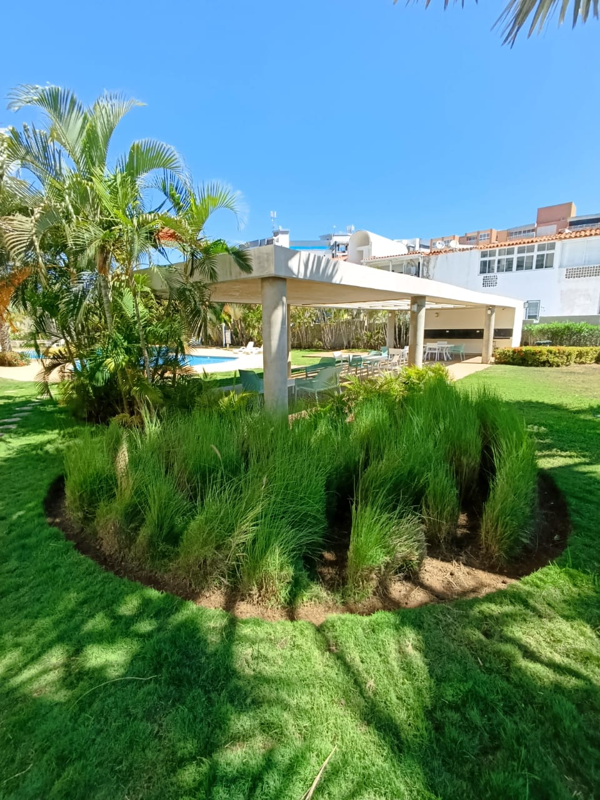
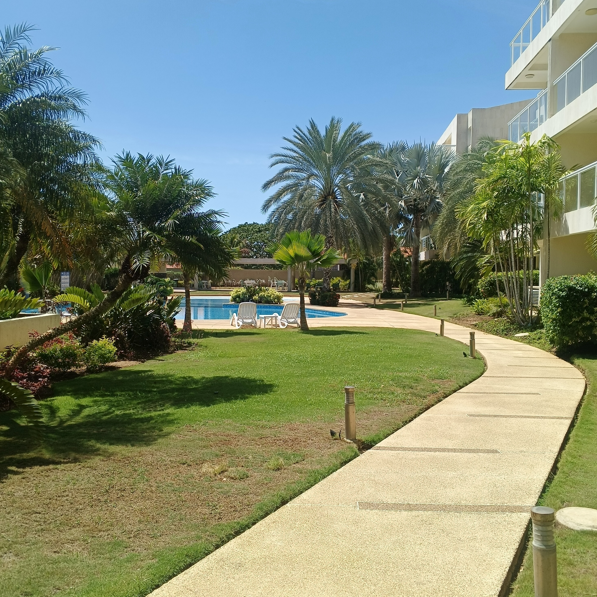
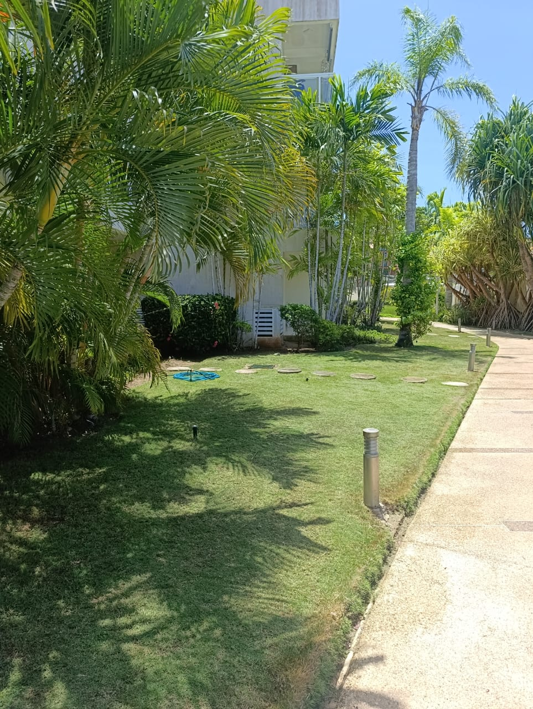
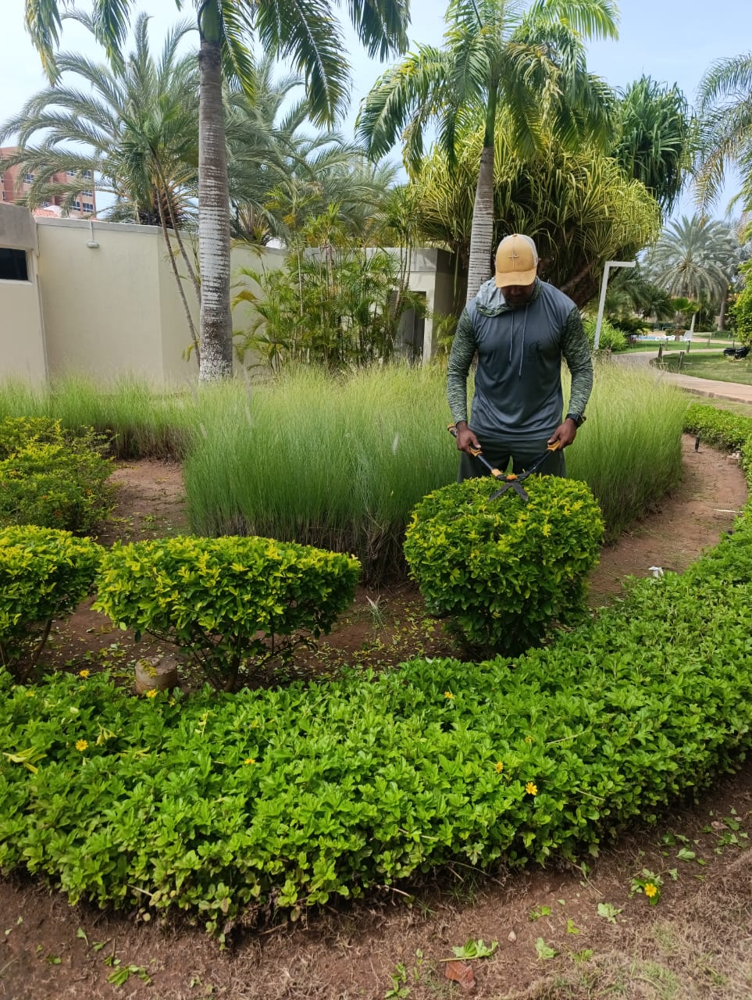
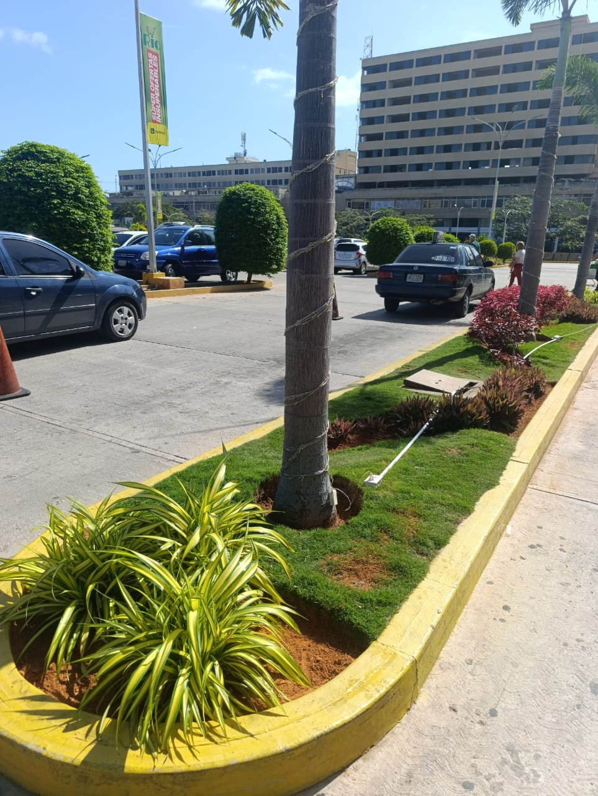
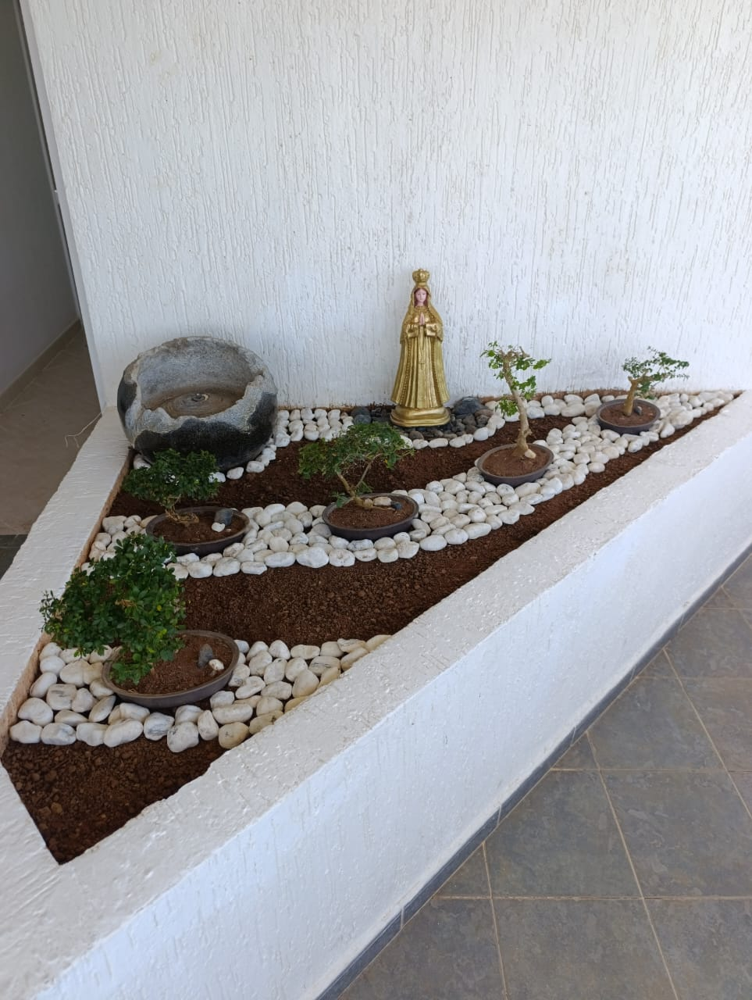

Jardines que se ven bien todo el año
Mantenimiento, poda, césped y diseño de áreas verdes en la Isla de Margarita, para casas, conjuntos residenciales y espacios comerciales.
Lo que hacemos en tu jardín
Desde el corte semanal hasta un jardín nuevo. Te decimos qué necesita tu espacio y cada cuánto.
Mantenimiento de jardines
Corte de césped, limpieza, control de maleza y cuidado general. Visitas periódicas para casas y áreas comunes de conjuntos residenciales.
Poda de arbustos y palmas
Poda de formación y de limpieza, con acabado parejo en setos, arbustos redondeados y palmeras.
Siembra y diseño de áreas verdes
Plantas ornamentales, gramíneas, palmas y plantas de color elegidas para el clima de la isla y el sol que recibe tu espacio.
Césped y riego
Siembra y reposición de grama, abonado y revisión del sistema de riego para que el verde dure.
Jardines de piedra y bonsái
Rincones decorativos con piedra, tierra y árboles pequeños para terrazas, entradas y pasillos.
Trabajos que ya están en pie
Áreas comunes, avenidas y rincones decorativos que mantenemos y diseñamos.






Cómo trabajamos
Visita
Vemos tu espacio, el sol, el riego y lo que quieres lograr.
Propuesta
Te enviamos qué haremos, con qué frecuencia y el presupuesto.
Ejecución
Trabajamos con herramienta propia y dejamos el área limpia.
Seguimiento
Visitas periódicas para que el jardín se mantenga como quedó.
Cuéntanos qué necesita tu jardín
Escríbenos y coordinamos una visita. También puedes preguntarle al asistente del botón azul sobre nuestros servicios.